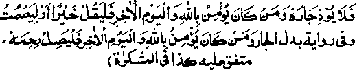

Chapter One · Section (b): Ahadith on the virtues of spending for the cause of Allah
13. Hospitality

Hadith 21
Rasulullah Sallallaho alaihe wasallam has said that whosoever believes in Allah Ta'ala and the Day of Judgment must treat his guest well, refrain from causing difficulties for his neighbour, and whatever he utters must be good, or else he should hold his tongue; the other version of this Hadith adds: ‘He should be kind to his kinsfolk.
Note: In this Hadith Rasulullah Sallallaho alaihe wasallam has warned us about several matter's and each of these is preceded by the phrase, "Whosoever believes in Allah and the Day of Judgement", (Arabic text contains full version, while the above translation is abbreviated). Repeating this phrase with each clause aims at showing the extreme importance of each matter. It is like someone telling one of his children, "If you are my son, you will do such and such". The purpose of these warnings is that these matters are part of the complete faith and whoever is not careful about them cannot be considered as perfect in his faith. The belief in Allah and Akhirah have been stated together, due to the fact that there is no reward in Akhirah for any good deed without faith in Allah Ta'ala. To have faith in Allah Ta'ala includes faith in the Akhirah. Its special mention in the Hadith above is probably for inspiring a passion for the rewards to be had on the Day of Judgment for accomplishing the deeds emphasised by Rasulullah Sallallaho alaihe wasallam. On that day, it will become obvious to all how much rewards are given by Allah Ta'ala, for the smallest things and actions done in this life.
Rasulullah Sallallaho alaihe wasallam has emphasised four matters in the above Hadith:
One, to honour one’s guest; this point is fully explained under the next Hadith.